En desarrollo.
Desde la TF del sistema: \begin {align*} H(s) &= \frac {1}{ms^2+cs+k} ~\color {red}{\frac {1/m}{1/m}}\\ &= \frac {1/m}{s^2+2\xi \omega _ns+\omega _n^2} \end {align*}
¿Cómo se obtienen los polos? \(\Longrightarrow \) Calcular las raíces del polinomio del denominador:
\begin {align*} s^2+2\xi \omega _ns+\omega _n^2=0 \qquad \text {(Ecuaci\'on caracter\'istica)} \end {align*}
\begin {align*} s_{1,2}=-\xi \omega _n\pm j \underbrace {\omega _n\sqrt {1-\xi ^2}}_{\omega _d} \qquad \text {(Polos del sistema de 1GDL)} \end {align*}
¿Es estable? \(\Longrightarrow \) Depende del valor de \(\xi \):
Además, el sistema oscila sí y solo si \(\omega _d>0\Longrightarrow \omega _n>0\): propiedad del sistema dinámico.
Si \(\xi >0, ~ \omega _n>0\):
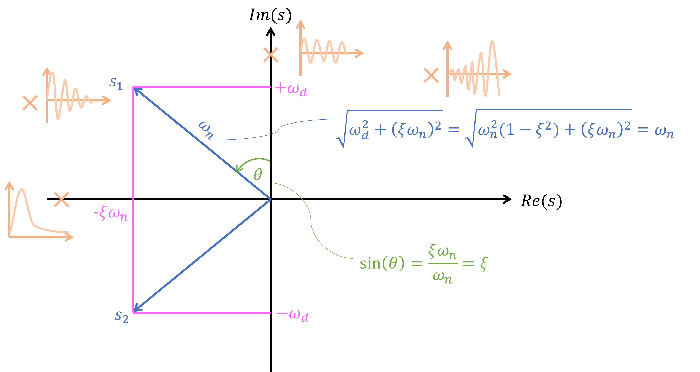
Notar que el FRF se puede obtener al reemplazar \(s=j\omega \) en la TF: \begin {align*} H(\omega )=H(s)\bigg |_{s=j\omega } \end {align*}
Ejemplo: Sistema de 1GDL \begin {align*} \text {EOM: }~m\ddot {u}+c\dot {u}+ku=f(t) \end {align*}
\begin {align*} \Longrightarrow \text {TF: }&~ H(s)=\frac {1}{ms^2+cs+k}=\frac {1/m}{s^2+(c/m)s+k/m}\\ \Longrightarrow \text {FRF: }&~ H(\omega )=H(s)\bigg |_{s=j\omega }=\frac {1}{(k=m\omega ^2)+j\omega c} \end {align*}
\begin {align*} H(\omega )=\frac {1}{(j\omega -\lambda _1)(j\omega -\lambda _1^*)} \end {align*}
\begin {align*} \lambda _{1,2}=-\xi \omega _n\pm \omega _n\sqrt {1-\xi ^2}~\text {: polos del sistema} \end {align*}
donde:
\[ \lambda _{2} = \lambda _{1}^{*}\]
\(\lambda \) y \(v\) son los valores y vectores propios de \(A\).
La función Delta de Dirac se denota como:
\begin {align*} \delta (t)= \left \{ \begin {array}{ll} +\infty & t=0 \\ 0 & t\neq 0 \\ \end {array} \right . \end {align*}
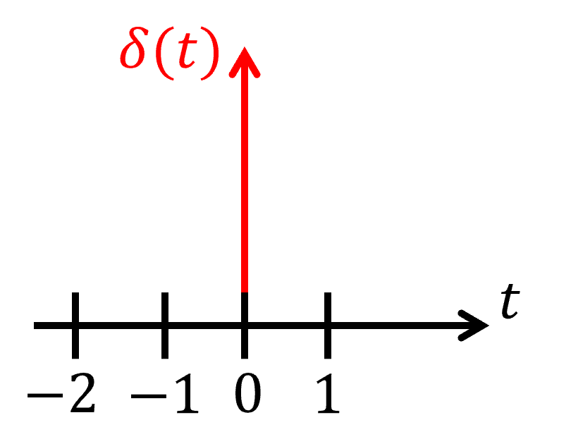
Propiedades: \begin {align*} \int _{-\infty }^{+\infty }\delta (t)dt=1 \quad &\text {Impulso unitario}\\ \int _{-\infty }^{+\infty }f(t)\delta (t-T)dt=f(T) \quad &\text {Sampleo} \end {align*}
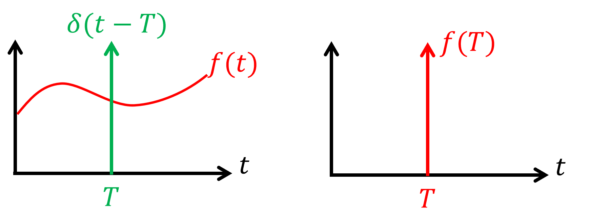
\begin {align*} \Rightarrow f(T) = f(t)\ast \delta (t-T) \end {align*}
Propiedad: Sea \(f(t)\) una función continua, entonces, se puede expresar como una integral de la convolución con la función \(\delta (t)\). \begin {align*} f(t)=\int _{-\infty }^{+\infty }f(\tau )\delta (t-\tau )d\tau \end {align*}
Esta superposición nos permite componer la función \(f(t)\) como una suma infinita de impulsos unitarios con la función \(\delta (t)\).
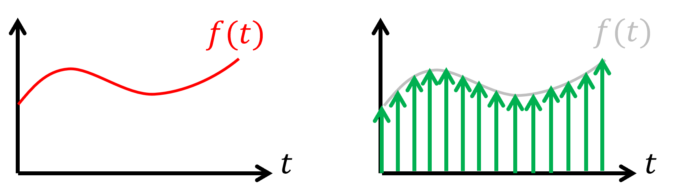
¿Cuál es la respuesta de un sistema cuando se le somete a un impulso unitario?
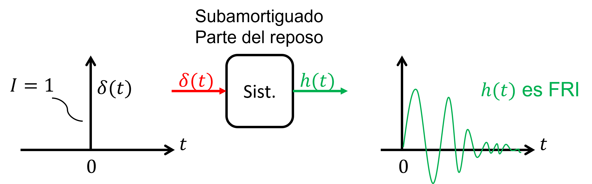
Para sistemas estructurales (\(\xi <1\)), la ecuación de movimiento sometida a un impulso unitario: \begin {align*} m\ddot {x}+c\dot {x}+kx=\delta (t)\\ x(0)=0 \quad \dot {x}(0)=0 \end {align*}
La solución a esta ecuación es la Función de Respuesta Impulso (FRI) cuando el impulso se aplica en el tiempo \(\tau = 0\): \begin {align*} x(t)=h(t)=\frac {1}{m\omega _d}e^{-\xi \omega _nt}\sin {(\omega _dt)}, \quad t\geq 0 \end {align*}
donde \(\omega _n = \sqrt {\frac {k}{m}}\) es la frecuencia natural y \(\omega _d = \omega _n \sqrt {1-\xi ^2}\) es la frecuencia natural amortiguada.
Ahora, considere una excitación \(u(t)\) continua. Se puede representar como un tren de impulsos:
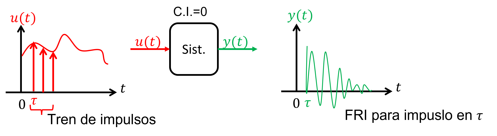
Notar que cada impulso genera una respuesta en el sistema \(\delta (t-\tau )\longrightarrow h(t-\tau )\).
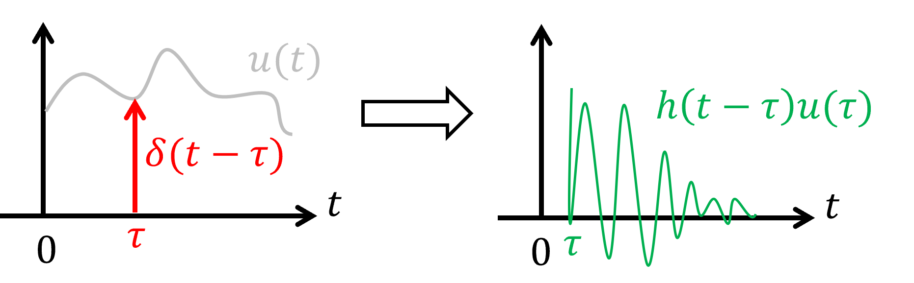
/La respuesta del sistema cuando se somete a este tren de impulsos se obtiene por superposición: \begin {align*} y(t)=\int _0^tu(\tau )h(t-\tau )d\tau \quad \text {``Integral de Duhamel''}\Rightarrow \text {Convolución} \end {align*}
En resumen: La respuesta analítica de un sistema LTI es la convolución entre el FRI \(h(t)\) y la excitación \(u(t)\).
\begin {align*} \Rightarrow y(t)=u(t)\ast h(t) \end {align*}
Definición: La transformada de Laplace de \(f(t)\) es igual a: \begin {align*} \mathcal {L}: ~ F(s)=\int _{-\infty }^{+\infty }f(t)e^{-\xi t}dt \quad \text {Transformada Bilateral (``two-sided'')} \end {align*}
donde \(s\in \mathbb {C}\), \(s=\sigma +j\omega \), \(j^2=-1\), \(j\) es la unidad imaginaria.
Definición: La transformada inversa de Laplace es igual a: \begin {align*} \mathcal {L}^{-1}: ~ f(t)=\frac {1}{2\pi j}\int _{+\sigma -j\infty }^{+\sigma +j\infty }F(s)e^{st}ds \end {align*}
La razón por la que se opta por trabajar con la variable de Laplace \(s\) en lugar de utilizar el tiempo \(t\) es la simplificación para obtener la respuesta. Al emplear la variable de Laplace, la respuesta se obtiene con multiplicaciones en vez de convoluciones.
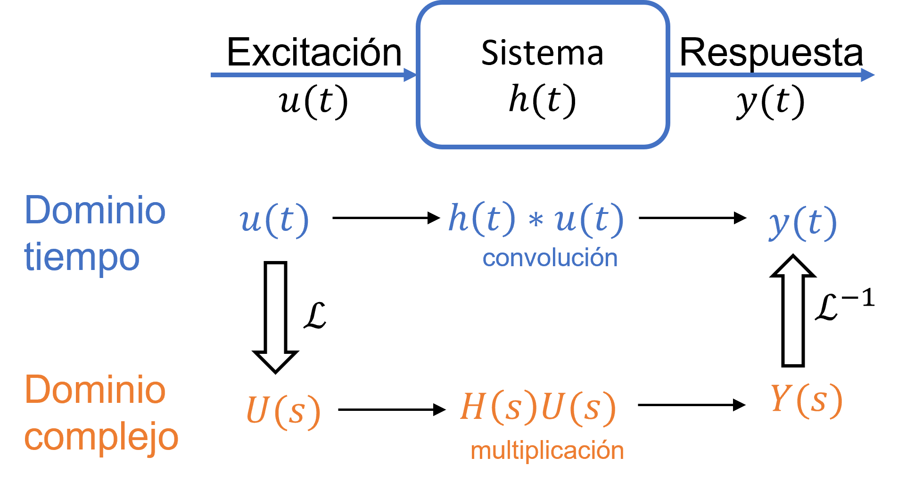
Al obtener la respuesta ya sea por el dominio del tiempo o pasando por el dominio complejo, se obtiene exactamente el mismo resultado. \begin {align*} y(t)=h(t)\ast u(t) \xRightarrow []{\mathcal {L}} Y(s)=H(s)\cdot U(s) \end {align*}
donde: \begin {align*} H(s)=\mathcal {L}\{h(t)\}=\int _0^{\infty }h(t)e^{-\xi t}dt \\ Y(s)=\mathcal {L}\{y(t)\}=\int _0^{\infty }y(t)e^{-\xi t}dt \\ U(s)=\mathcal {L}\{u(t)\}=\int _0^{\infty }u(t)e^{-\xi t}dt \end {align*}
Propiedades:
Aparte: \begin {align*} H(j\omega )=\mathcal {F}\{h(t)\} \end {align*}
\begin {align*} H(j\omega ) \xleftrightarrow {s=j\omega } H(s) \end {align*}
Trabajar con LT permite obtener la respuesta simplemente multiplicando la señal de entrada con la función de transferencia en vez de realizar la convolución.
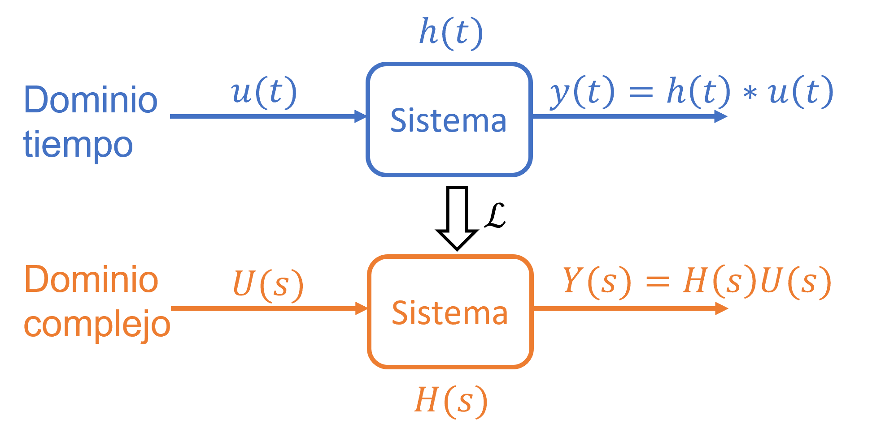
Definición: \(H(s)\in \mathbb {C}\) (función de transferencia) \begin {align*} H(s)=\frac {\prod _{i=1}^m(s-z_i)}{\prod _{j=1}^n(s-p_j)} \end {align*}
Definición: \(p_j \in \mathbb {C}\) (polos) son las raíces de la ecuación característica del sistema dinámico: \begin {align*} \prod _{j=1}^n(s-p_j)=0 \end {align*}
Definición: \(z_i \in \mathbb {C}\) (ceros) son las raíces del polinomio del numerador: \begin {align*} \prod _{i=1}^m(s-z_i)=0 \end {align*}
Importante: La función de transferencia recopila toda la información del sistema dinámico en los coeficientes de los polinomios del numerador y denominador o equivalentemente con los polos y ceros.
Para visualizar las propiedades dinámicas del sistema, vamos a trabajar en el plano complejo.
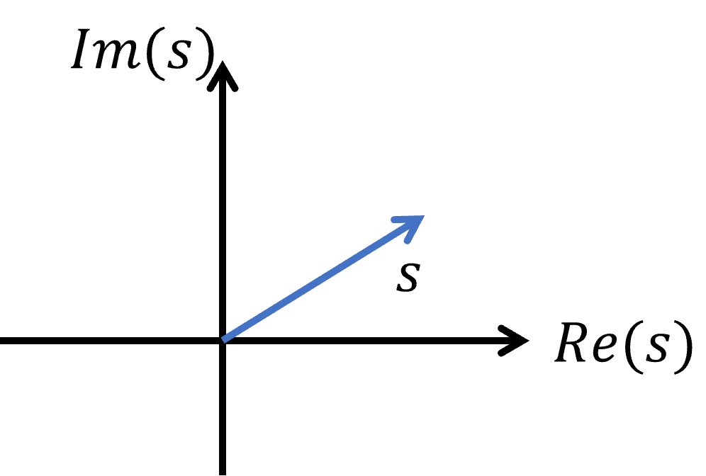
Los ceros \(z_i\) y polos \(p_j\) son puntos sobre el plano complejo
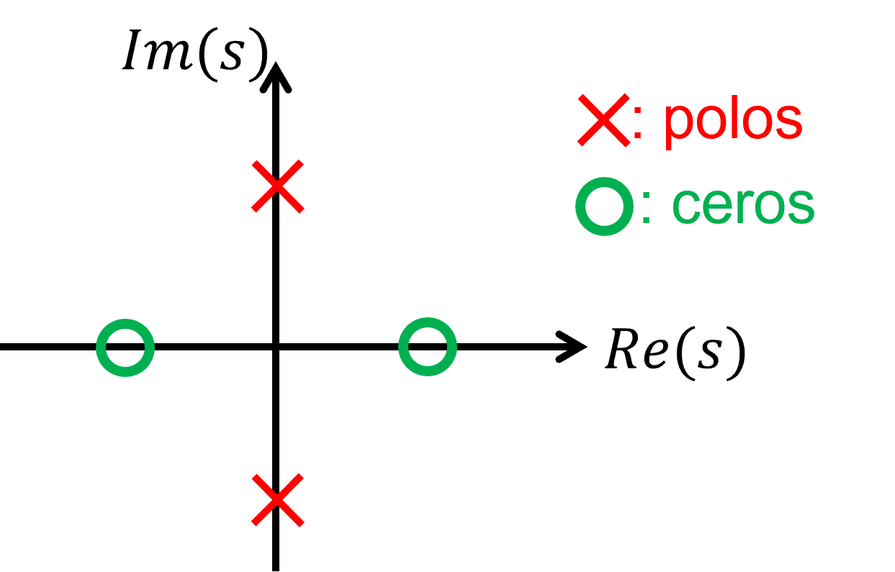
\(|H(s)|\) representa una “superficie” sobre el plano complejo
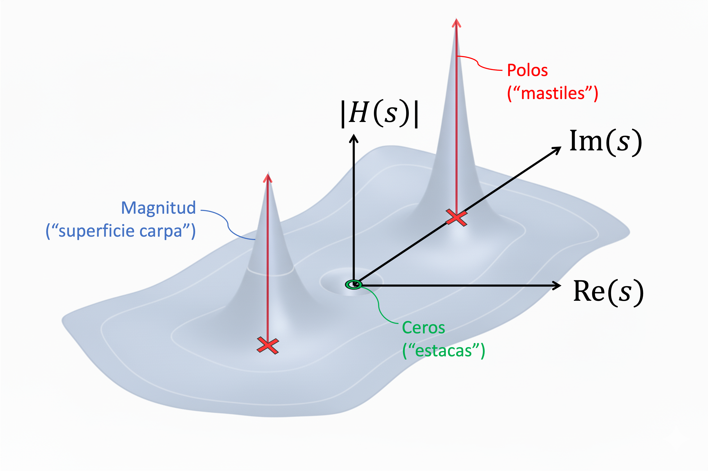
Aparte: Recordar que \(H(s)\) corresponde a: \(H(s)=\mathcal {L}\{h(t)\}\) (\(h(t)\) es FRI), por ende, \(h(t)=\mathcal {L}^{-1}\{H(s)\}\). Por lo tanto, los polos nos dan información del
FRI.
Ejemplo: Si tenemos la siguiente función de transferencia \(H(s)=\frac {1}{s-a}\), se puede obtener la FRI aplicando la inversa de la
transformada de Laplace \(h(t)=\mathcal {L}^{-1}\{H(s)\}=e^{at}\)
Casos:
\(a>0, ~a\in \mathbb {R}\Longrightarrow h(t)=e^{-|a|t}\)
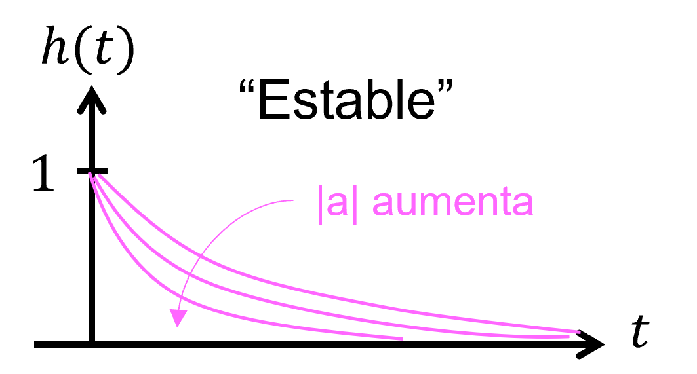
\(a=0, ~a\in \mathbb {R}\Longrightarrow h(t)=1\)
\(a<0, ~a\in \mathbb {R}\Longrightarrow h(t)=e^{|a|t}\)
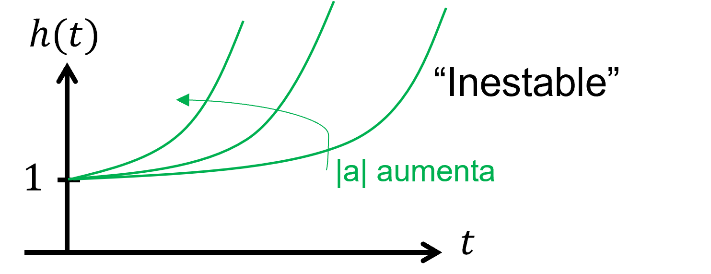
\(H(s)=\frac {1}{s^2+a^2}\Longrightarrow s_{1,2}=\pm \beta j \in \mathbb {C}\)
\(h(t)=\mathcal {L}^{-1}\{H(s)\}=\sin {(\beta t)}\)
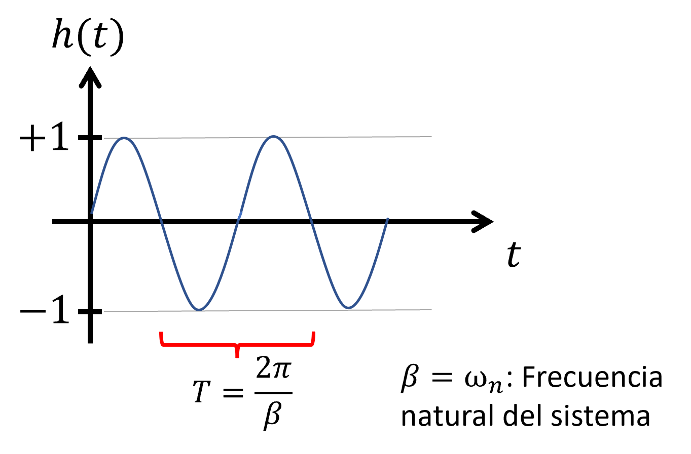
\(a_{1,2}=\alpha \pm \beta j \in \mathbb {C}\) (polos conjugados)
\begin {align*} H(s) &= \frac {1}{(s-\alpha )^2+\beta ^2} \longrightarrow \text {Raíces del denominador}\Rightarrow a_{1,2}\\ h(t) &= \mathcal {L}^{-1}\{H(s)\} = e^{+\alpha t}\sin {(\beta t)} \end {align*}
\(\alpha <0\)
\(h(t) = e^{-|\alpha | t}\sin {(\beta t)}\)
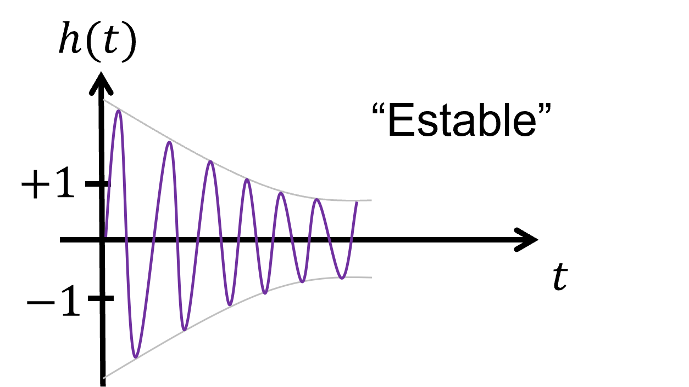
\(\alpha >0\)
\(h(t) = e^{+|\alpha | t}\sin {(\beta t)}\)
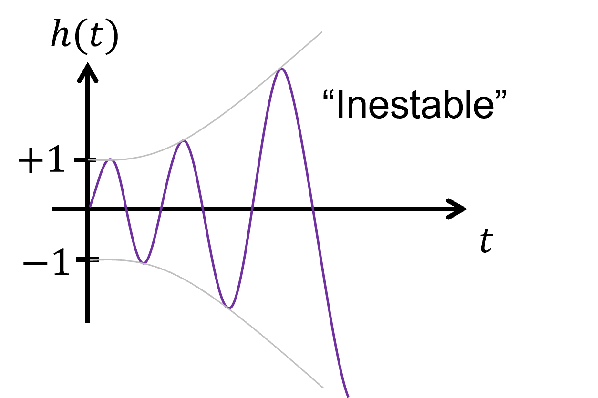
Volviendo al plano complejo, podemos identificar el tipo de respuesta FRI del sistema solo con información de la posición de los polos:
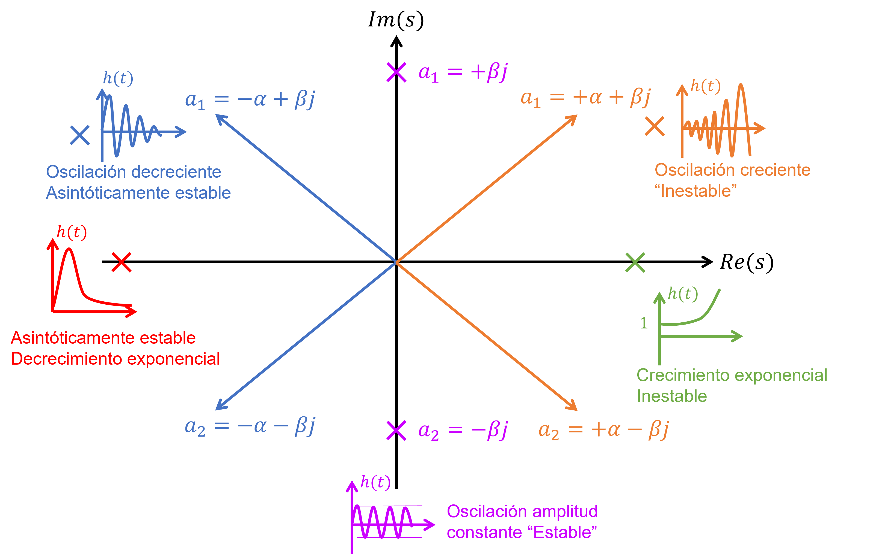
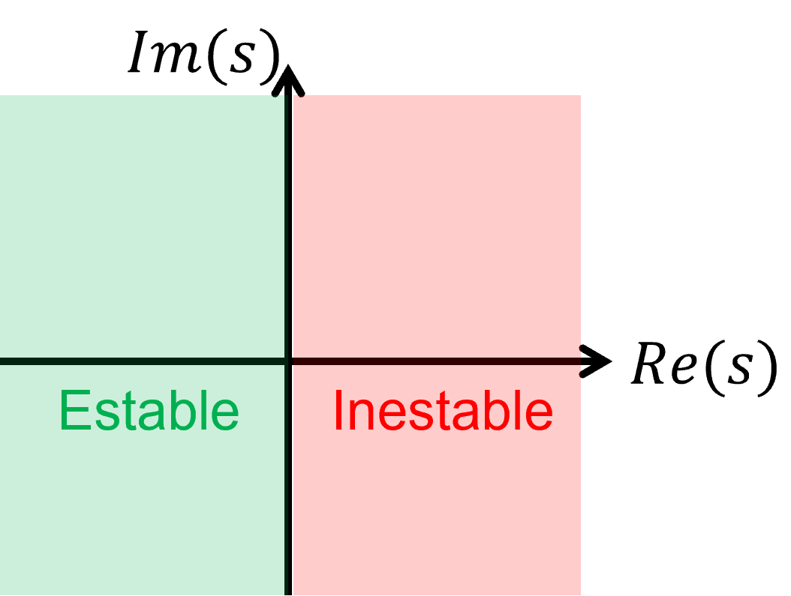
Un sistema es estable en el sentido BIBO, si y sólo si el sistema posee todos sus polos a la izquierda del plano complejo. Dicho de otra forma: \(p_i=\alpha _i\pm \beta _i j\)
Si queremos transicionar de un estado \(x(t_0)\) a \(x(t_1)\), la respuesta no es instantánea y existe una respuesta transiente que hay que limitar.
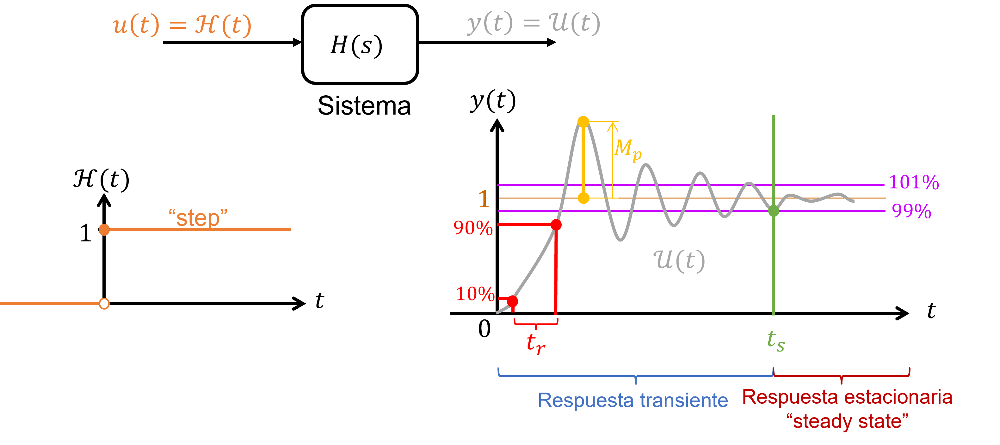
Definición:
En matlab se puede trabajar con sistemas dinámicos utilizando variables tipo sistema. Estas variables se
puede crear si se cuenta con la información de alguna de las representaciones vistas anteriormente.
Para State-Space se requieren las matrices \(A\), \(B\), \(C\), \({D} \Longrightarrow \) matrices de tipo “double”
Para construir un sistema desde representación espacio-estado, se utiliza el siguiente comando:
>> sys = ss(As, Bs, Cs, Ds); % Variable tipo sistema
Para representar utilizando la función de transferencia se requiere conocer los coeficientes de los polinomios del numerador y denominador de la función de transferencia:
\begin {align*} H(s)=\frac {b_ms^m+b_{m-1}s^{m-1}+...+b_1s+b_0}{s^n+a_{n-1}s^{n-1}+...+a_1s+a_0} \end {align*}
Se utiliza el siguiente comando para construir la variable tipo sistema:
>> sys = tf(num,den); % Variable tipo sistema
Donde: \begin {align*} \text {num} = [b_m, b_{m-1}, ... , b_1, b_0]\\ \text {den} = [1, a_{n-1}, ... , a_1, a_0] \end {align*}
Ejemplo de coeficientes para sistema 1GDL: \begin {align*} \text {num} = [1/m]\\ \text {den} = [1, c/m, k/m] \end {align*}
También, se pueden generar conociendo los polos, ceros y la ganancia del sistema: \begin {align*} \text {TF: }~H(s)= k\frac {\prod _{i=1}^m(s-z_i)}{\prod _{j=1}^n(s-p_j)} \end {align*}
\begin {align*} \text {zeros} &= [z_m, z_{m-1}, ..., z_2, z_1]\\ \text {poles} &= [p_n, p_{n-1},..., p_2, p_1]\\ \text {gain} &= k \end {align*}
Ocupando los polos, ceros y ganancia, también se puede generar una variable tipo sistema:
>> sys = zpk(ceros, polos, gain);
Matlab: Control System Toolbox
El toolbox Control System de matlab permite también extraer información y simular las variables de tipo sistema.
Valores y vectores propios del sistema:
>> eig(sys) >> eig(As)
Polos del sistema, frecuencias naturales y razones de amortiguamiento:
>> damp(sys) >> damp(As)
Posición de “ceros” y “polos” en el plano complejo:
>> pzmap(sys)
Gráfico magnitud y fase vs frecuencia del sistema
>> bode(sys) >> bodeplot(sys)
Ganancia del sistema
>> dcgain(sys) %% DC: direct current (caso estático)
Análisis: respuesta a impulso y a escalón
>> impulse(sys) >> step(sys)